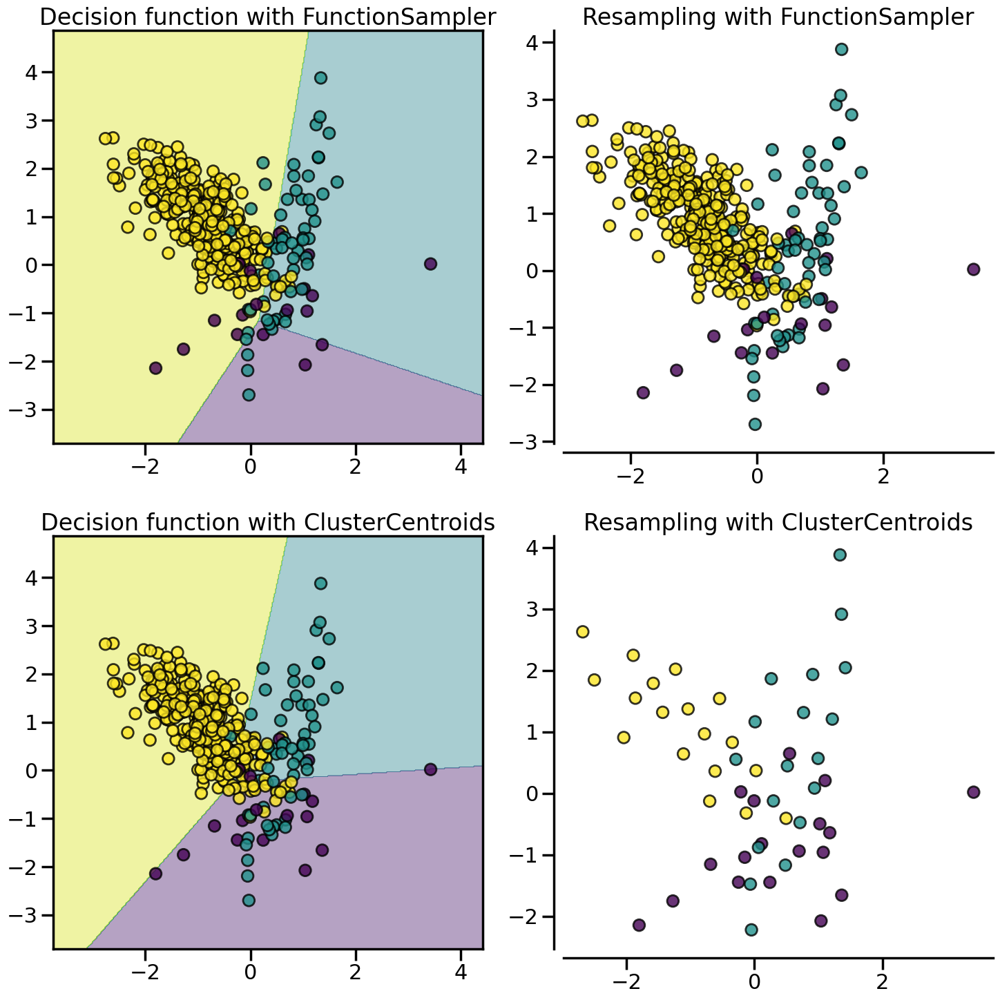
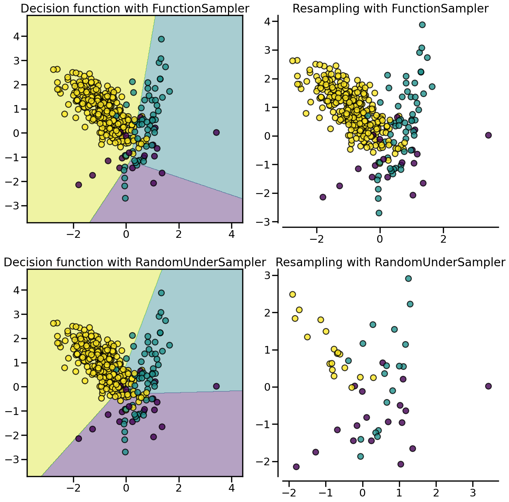
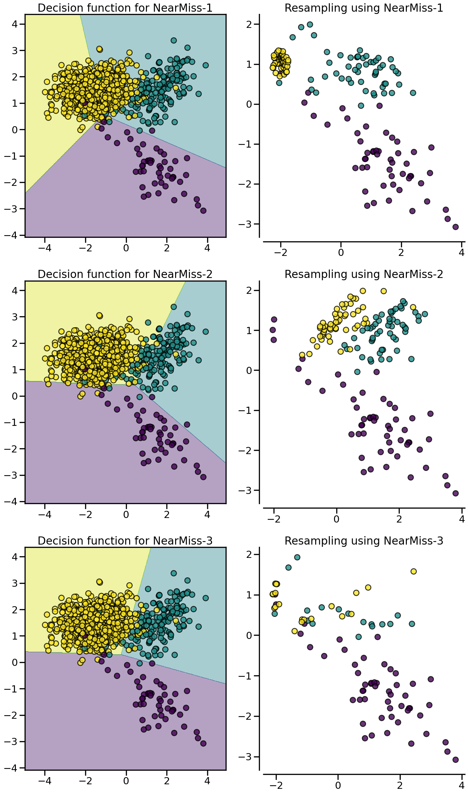
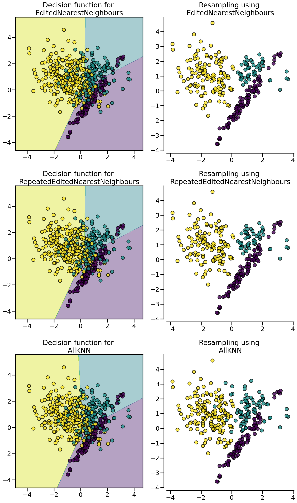
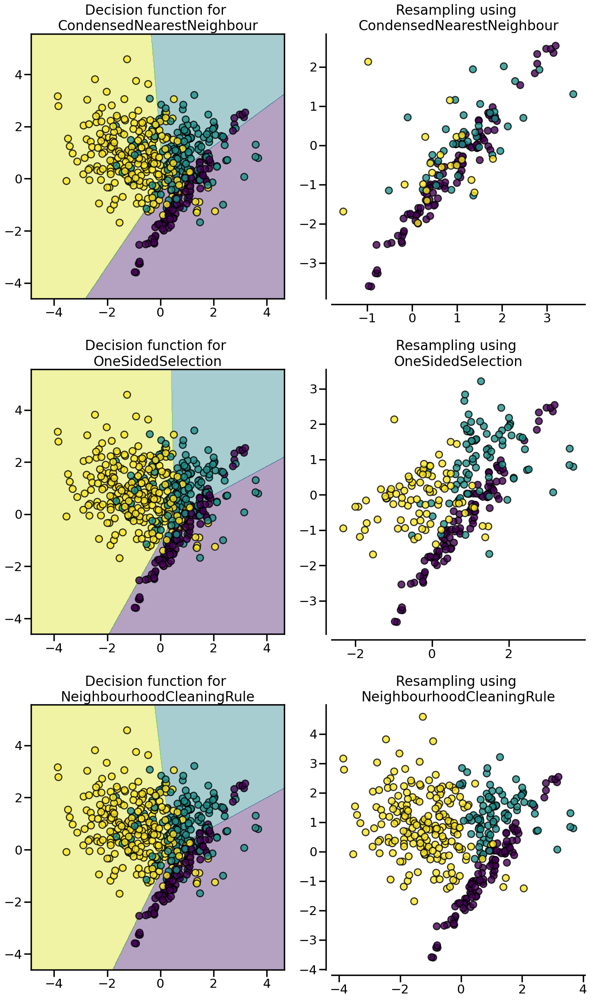
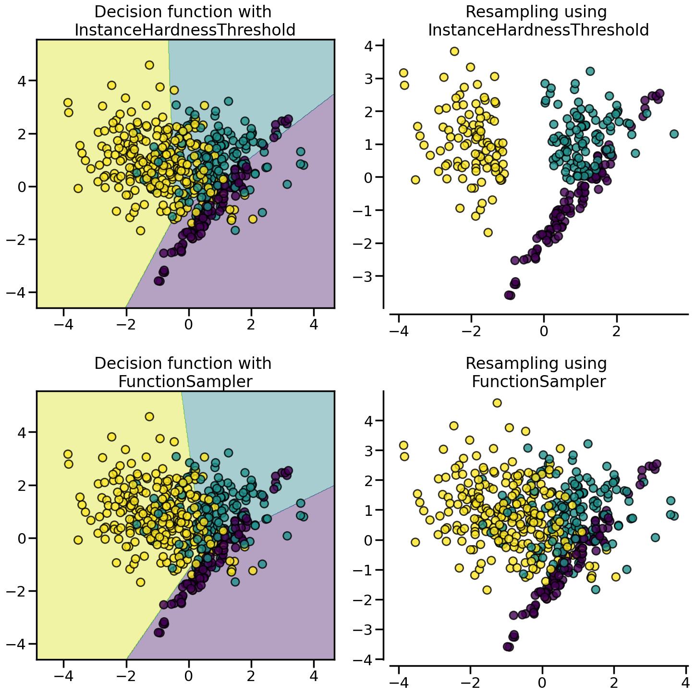

Compare under-sampling samplers
The following example attends to make a qualitative comparison between the different under-sampling algorithms available in the imbalanced-learn package.
Automatically created module for IPython interactive environmentThe following function will be used to create toy dataset. It uses the :func:~sklearn.datasets.make_classification from scikit-learn but fixing some parameters.
from sklearn.datasets import make_classification
def create_dataset(
n_samples=1000,
weights=(0.01, 0.01, 0.98),
n_classes=3,
class_sep=0.8,
n_clusters=1,
):
return make_classification(
n_samples=n_samples,
n_features=2,
n_informative=2,
n_redundant=0,
n_repeated=0,
n_classes=n_classes,
n_clusters_per_class=n_clusters,
weights=list(weights),
class_sep=class_sep,
random_state=0,
)The following function will be used to plot the sample space after resampling to illustrate the specificities of an algorithm.
The following function will be used to plot the decision function of a classifier given some data.
import numpy as np
def plot_decision_function(X, y, clf, ax, title=None):
plot_step = 0.02
x_min, x_max = X[:, 0].min() - 1, X[:, 0].max() + 1
y_min, y_max = X[:, 1].min() - 1, X[:, 1].max() + 1
xx, yy = np.meshgrid(
np.arange(x_min, x_max, plot_step), np.arange(y_min, y_max, plot_step)
)
Z = clf.predict(np.c_[xx.ravel(), yy.ravel()])
Z = Z.reshape(xx.shape)
ax.contourf(xx, yy, Z, alpha=0.4)
ax.scatter(X[:, 0], X[:, 1], alpha=0.8, c=y, edgecolor="k")
if title is not None:
ax.set_title(title)Prototype generation: under-sampling by generating new samples
:class:~imblearn.under_sampling.ClusterCentroids under-samples by replacing the original samples by the centroids of the cluster found.
import matplotlib.pyplot as plt
from sklearn.cluster import MiniBatchKMeans
from imblearn import FunctionSampler
from imblearn.pipeline import make_pipeline
from imblearn.under_sampling import ClusterCentroids
X, y = create_dataset(n_samples=400, weights=(0.05, 0.15, 0.8), class_sep=0.8)
samplers = {
FunctionSampler(), # identity resampler
ClusterCentroids(
estimator=MiniBatchKMeans(n_init=1, random_state=0), random_state=0
),
}
fig, axs = plt.subplots(nrows=2, ncols=2, figsize=(15, 15))
for ax, sampler in zip(axs, samplers):
model = make_pipeline(sampler, clf).fit(X, y)
plot_decision_function(
X, y, model, ax[0], title=f"Decision function with {sampler.__class__.__name__}"
)
plot_resampling(X, y, sampler, ax[1])
fig.tight_layout()
Prototype selection: under-sampling by selecting existing samples
The algorithm performing prototype selection can be subdivided into two groups: (i) the controlled under-sampling methods and (ii) the cleaning under-sampling methods.
With the controlled under-sampling methods, the number of samples to be selected can be specified. :class:~imblearn.under_sampling.RandomUnderSampler is the most naive way of performing such selection by randomly selecting a given number of samples by the targetted class.
from imblearn.under_sampling import RandomUnderSampler
X, y = create_dataset(n_samples=400, weights=(0.05, 0.15, 0.8), class_sep=0.8)
samplers = {
FunctionSampler(), # identity resampler
RandomUnderSampler(random_state=0),
}
fig, axs = plt.subplots(nrows=2, ncols=2, figsize=(15, 15))
for ax, sampler in zip(axs, samplers):
model = make_pipeline(sampler, clf).fit(X, y)
plot_decision_function(
X, y, model, ax[0], title=f"Decision function with {sampler.__class__.__name__}"
)
plot_resampling(X, y, sampler, ax[1])
fig.tight_layout()
:class:~imblearn.under_sampling.NearMiss algorithms implement some heuristic rules in order to select samples. NearMiss-1 selects samples from the majority class for which the average distance of the \(k\)` nearest samples of the minority class is the smallest. NearMiss-2 selects the samples from the majority class for which the average distance to the farthest samples of the negative class is the smallest. NearMiss-3 is a 2-step algorithm: first, for each minority sample, their \(m\) nearest-neighbors will be kept; then, the majority samples selected are the on for which the average distance to the \(k\) nearest neighbors is the largest.
from imblearn.under_sampling import NearMiss
X, y = create_dataset(n_samples=1000, weights=(0.05, 0.15, 0.8), class_sep=1.5)
samplers = [NearMiss(version=1), NearMiss(version=2), NearMiss(version=3)]
fig, axs = plt.subplots(nrows=3, ncols=2, figsize=(15, 25))
for ax, sampler in zip(axs, samplers):
model = make_pipeline(sampler, clf).fit(X, y)
plot_decision_function(
X,
y,
model,
ax[0],
title=f"Decision function for {sampler.__class__.__name__}-{sampler.version}",
)
plot_resampling(
X,
y,
sampler,
ax[1],
title=f"Resampling using {sampler.__class__.__name__}-{sampler.version}",
)
fig.tight_layout()/home/coco/anaconda3/envs/py38/lib/python3.8/site-packages/imblearn/under_sampling/_prototype_selection/_nearmiss.py:203: UserWarning: The number of the samples to be selected is larger than the number of samples available. The balancing ratio cannot be ensure and all samples will be returned.
warnings.warn(
/home/coco/anaconda3/envs/py38/lib/python3.8/site-packages/imblearn/under_sampling/_prototype_selection/_nearmiss.py:203: UserWarning: The number of the samples to be selected is larger than the number of samples available. The balancing ratio cannot be ensure and all samples will be returned.
warnings.warn(
/home/coco/anaconda3/envs/py38/lib/python3.8/site-packages/imblearn/under_sampling/_prototype_selection/_nearmiss.py:203: UserWarning: The number of the samples to be selected is larger than the number of samples available. The balancing ratio cannot be ensure and all samples will be returned.
warnings.warn(
/home/coco/anaconda3/envs/py38/lib/python3.8/site-packages/imblearn/under_sampling/_prototype_selection/_nearmiss.py:203: UserWarning: The number of the samples to be selected is larger than the number of samples available. The balancing ratio cannot be ensure and all samples will be returned.
warnings.warn(
:class:~imblearn.under_sampling.EditedNearestNeighbours removes samples of the majority class for which their class differ from the one of their nearest-neighbors. This sieve can be repeated which is the principle of the :class:~imblearn.under_sampling.RepeatedEditedNearestNeighbours. :class:~imblearn.under_sampling.AllKNN is slightly different from the :class:~imblearn.under_sampling.RepeatedEditedNearestNeighbours by changing the \(k\) parameter of the internal nearest neighors algorithm, increasing it at each iteration.
from imblearn.under_sampling import (
AllKNN,
EditedNearestNeighbours,
RepeatedEditedNearestNeighbours,
)
X, y = create_dataset(n_samples=500, weights=(0.2, 0.3, 0.5), class_sep=0.8)
samplers = [
EditedNearestNeighbours(),
RepeatedEditedNearestNeighbours(),
AllKNN(allow_minority=True),
]
fig, axs = plt.subplots(3, 2, figsize=(15, 25))
for ax, sampler in zip(axs, samplers):
model = make_pipeline(sampler, clf).fit(X, y)
plot_decision_function(
X, y, clf, ax[0], title=f"Decision function for \n{sampler.__class__.__name__}"
)
plot_resampling(
X, y, sampler, ax[1], title=f"Resampling using \n{sampler.__class__.__name__}"
)
fig.tight_layout()
:class:~imblearn.under_sampling.CondensedNearestNeighbour makes use of a 1-NN to iteratively decide if a sample should be kept in a dataset or not. The issue is that :class:~imblearn.under_sampling.CondensedNearestNeighbour is sensitive to noise by preserving the noisy samples. :class:~imblearn.under_sampling.OneSidedSelection also used the 1-NN and use :class:~imblearn.under_sampling.TomekLinks to remove the samples considered noisy. The :class:~imblearn.under_sampling.NeighbourhoodCleaningRule use a :class:~imblearn.under_sampling.EditedNearestNeighbours to remove some sample. Additionally, they use a 3 nearest-neighbors to remove samples which do not agree with this rule.
from imblearn.under_sampling import (
CondensedNearestNeighbour,
NeighbourhoodCleaningRule,
OneSidedSelection,
)
X, y = create_dataset(n_samples=500, weights=(0.2, 0.3, 0.5), class_sep=0.8)
fig, axs = plt.subplots(nrows=3, ncols=2, figsize=(15, 25))
samplers = [
CondensedNearestNeighbour(random_state=0),
OneSidedSelection(random_state=0),
NeighbourhoodCleaningRule(),
]
for ax, sampler in zip(axs, samplers):
model = make_pipeline(sampler, clf).fit(X, y)
plot_decision_function(
X, y, clf, ax[0], title=f"Decision function for \n{sampler.__class__.__name__}"
)
plot_resampling(
X, y, sampler, ax[1], title=f"Resampling using \n{sampler.__class__.__name__}"
)
fig.tight_layout()
:class:~imblearn.under_sampling.InstanceHardnessThreshold uses the prediction of classifier to exclude samples. All samples which are classified with a low probability will be removed.
from imblearn.under_sampling import InstanceHardnessThreshold
samplers = {
FunctionSampler(), # identity resampler
InstanceHardnessThreshold(
estimator=LogisticRegression(),
random_state=0,
),
}
fig, axs = plt.subplots(nrows=2, ncols=2, figsize=(15, 15))
for ax, sampler in zip(axs, samplers):
model = make_pipeline(sampler, clf).fit(X, y)
plot_decision_function(
X,
y,
model,
ax[0],
title=f"Decision function with \n{sampler.__class__.__name__}",
)
plot_resampling(
X, y, sampler, ax[1], title=f"Resampling using \n{sampler.__class__.__name__}"
)
fig.tight_layout()
plt.show()